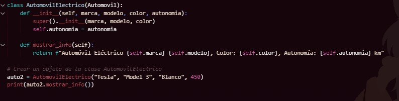

Herencia
La herencia es un mecanismo que permite crear nuevas clases basadas en otras existentes. Esto significa que una clase hija puede heredar atributos y métodos de una clase padre, evitando la necesidad de duplicar código. La herencia fomenta la reutilización y permite extender la funcionalidad de las clases existentes. Por ejemplo, si tenemos una clase general "Automóvil", podemos crear una subclase "Automóvil Eléctrico" que herede las características básicas del automóvil pero agregue atributos específicos, como la capacidad de la batería.
